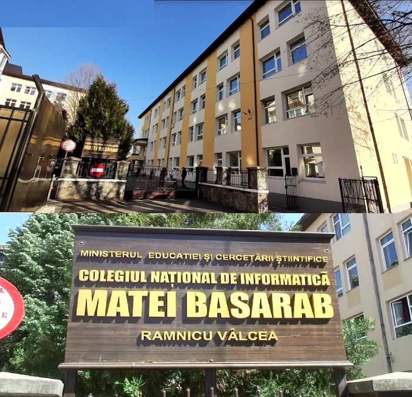

.webp)
The "Matei Basarab" National College of Informatics in Vâlcea is one of Romania's elite educational institutions, renowned for its excellence in the field of informatics and exceptional preparation it provides to its students. Founded in 1981, the college quickly became a benchmark in IT education, attracting passionate students from across the country.Its privileged geographic location in the municipality of Râmnicu Vâlcea, a significant urban center in the Oltenia region, provides the college with access to high-quality educational resources and facilities. With a rich history and tradition of excellence in education, the institution aims to offer its students the best conditions for developing knowledge and skills in the field of informatics.The college's curriculum is designed to meet the demands and challenges of the IT field and is continuously adapted to technological changes and labor market requirements. Students benefit from specialized courses in programming, algorithms, databases, computer networks, cybersecurity, and more. Additionally, modernly equipped laboratories and advanced technological resources allow students to put their knowledge into practice and work on relevant practical projects.
The college's teachers are dedicated professionals with experience in the IT field and a passion for education. They guide students toward excellence, motivate them to discover their potential, and prepare them for the challenges of a constantly changing digital world. Moreover, the college promotes a culture of academic excellence and innovation, encouraging students to participate in national and international competitions, conferences, workshops, and research projects in the field of informatics.
The remarkable results achieved by the college's students in informatics competitions and Olympiads attest to the quality of the education provided and place the institution among the most prestigious in the country.
| Profil | Specializare | Număr Clase | Număr Locuri |
|---|---|---|---|
| Profil Real | Matematică - Informatică | 1 | 26 |
| Matematică - Informatică | 1 | 26 | |
| Științele Naturii - Bilingv - Engleză | 1 | 26 | |
| Profil Uman | Științe Sociale | 1 | 26 |
| Profil Pedagogic | Învățător - Educatoare | 1 | 24 |
| Educator - Puericultor | 1 | 24 |
For more informations you can go on the official site:"Matei Basarab" National College of Informatics!